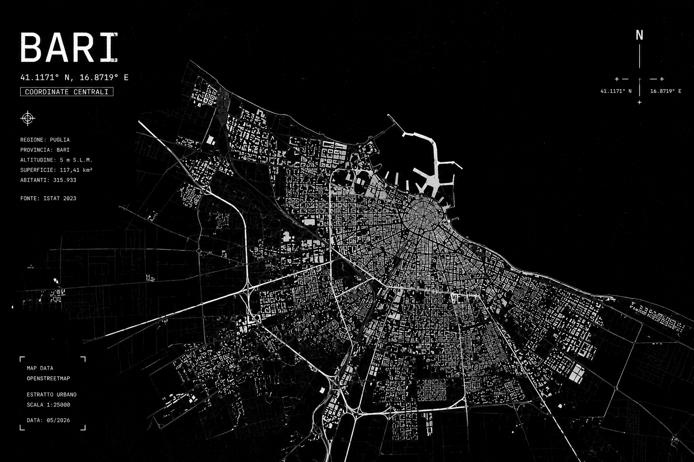

interventi registrati

stato: aperto
video recuperato
autore non identificato
soggetto ricorrente
presenza digitale verificata
stato: attivo
stato: osservazione aperta
identità non verificata
coordinate associate: Bari
attività in corso
instagram / nodo esterno